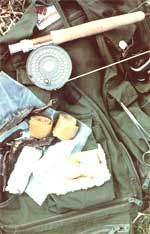
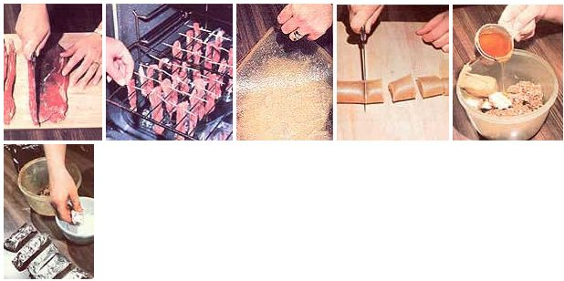

When you're preparing for that late summer camping, fishing, or hunting trip, don't forget to whip up some pack-along edibles!
Photos By The Author
When I spend a day outdoors-whether fishing, hunting, hiking, or (more likely) working around the homestead-I don't always want to stop what I'm doing in order to head home to eat. To solve the problem, I studied some of the foods used by our pioneer (and native American) ancestors. As a result, I'm now able to eat on the go ...and my trail foods are better tasting, and more wholesome, than are most commercially available packalong snacks.
In the old days, a woodsman or -woman often had to eat whatever was available, and that sometimes didn't amount to much! So such people learned to carry stashes of one or several trail foods with them, which they used to supplement the (frequently meager) edibles they were able to find, as well as to serve as full fare whenever necessary. The on-the-go goodies were lightweight and compact, and could be prepared before hitting the trail. They kept well and provided plenty of carbohydrates and protein for both quick and long-lasting energy.
My own "pocket pantry" is composed of approximations of those traditional snacks, as well as a couple of modern homemade trail foods. I hope you'll find them as handy, easy to fix, and enjoyable as I do.
JERKY IN YOUR OVEN
You'd have to go some to come up with an edible that's more firmly anchored in history than is jerky. Mountain folk, cowboys, and native Americans alike counted on this dried meat as a staple. However, if you've priced commercially prepared jerky lately, you know that ten pounds of the food would be close to an even swap for a pickup truck! Making it at home is much less expensive, but-if you have to buy the meat-still pretty costly. On the other hand, if you can use meat from your own livestock or (best of all, in my opinion) venison, you can make the trail/survival food for pennies.
Start with a piece of firm meat-a flank steak is a good choice-about 3/4" thick. Trim off the fat and cut the lean into strips 5" to 7" long and 1/4" thick. Sprinkle freshly ground pepper on the meat, and baste it with any of your favorite homemade marinades. (Or, if you prefer, you can use the store-bought flavoring called Liquid Smoke.) Insert a round wooden toothpick through the end of each ribbon, then place a layer of aluminum foil in the bottom of the oven, raise the upper rack to its highest level, and-using the toothpicks hang the meat from that rack. Prop the oven door open slightly, and turn the heat to 140°F (or the lowest setting possible). It'll take between six and eight hours for the strips to "cook". When they're dry but flexible enough to bend without breaking, let the finished jerky cool before storing it in sealable plastic bags.
ALL-NATURAL ENERGY BARS
Dried meat provides you with protein in a lightweight, chewy package. However, for quick energy the body requires carbohydrates ...which I get from an updated version of pemmican.
This food, as eaten by native Americans more than 100 years ago, usually consisted of jerky, powdered dried berries, and lard ...combined in equal parts and shaped into a roll. Frankly, that recipe produces a trail food that's a bit Spartan for my taste.
I favor a fruit-and-nut variety of pemmican. To make it, first run 1 cup each of dried peaches, dried apples, raisins, coconut, chopped peanuts, and 1/2 cup of prunes through a food grinder. Then give the mixture a second grinding, and blend it well in a large bowl. Add 1/2 cup of margarine, 1/2 cup of peanut butter, and 1/2 cup of honey to bind the ingredients together. Press your pemmican mixture into bars (or balls) and roll each one in powdered sugar. (Of course, you can omit the processed sweetener if you desire.) Wrap each of the bars in aluminum foil and store them in the freezer. When you're ready to head for the outback, simply take along as many as you need for the time you plan to spend (up to several days) afield.
TOOTHSOME HARDTACK
Pemmican is tasty, and jerky stays with me ...but I confess to a real partiality for breads. Biscuits, rolls, scones, muffins: I love all of them. In fact, I've been known to save extra pancakes from breakfast and take them with me for a midday snack. So I naturally poked around until I found a recipe for a good trail bread.
Traditional hardtack is made from little more than flour and water ...it's filling, but something short of delicious. My version of the old-time military fare is off-limits to anyone trying to trim away pounds, but it does stoke my fires when I'm chasing native brook trout, fast-running pheasants, a frisky colt, or lost cattle.
In a large bowl combine 3 cups of unbleached flour, 1-1/2 cups of graham flour, 1/2 cup of cornmeal, 1 tablespoon of sea salt, 1 teaspoon of sugar (or honey), 1/2 cup of shortening, and 1-1/2 cups of milk. Then lightly grease and flour a 14" X 16" cookie tin, put an egg-sized piece of dough on it, and roll the raw hardtack out with a sock-covered rolling pin until it's very thin (1/4" or less). Bake the sheet at 400°F until its edges are brown, turn it over, and bake until it's stiff. Then flop the round again, and return it to the oven once more until the other side is also about the consistency of cardboard. Take the sheet of hardtack out, put it somewhere to cool, and repeat the process until you've used up all the dough. Store your "working (wo)man's wafers" in an airtight container.
FRUIT LEATHER
This simple trail snack (it's actually a "quickie" version of a popular fruitdryer's food) can double as a school treat for children. First, cover a 14" X 16" cookie sheet with plastic wrap, and spread four cups of applesauce on it, evenly, so that the layer of fruit is no more than 1/4" thick. Then simply dry the mixture in your oven, with the door propped open slightly to allow the moisture to escape and the temperature set at 150°F. After six or eight hours the leather should be rubbery and slightly sticky. Peel the slab from the pan, roll it, and cut it into small bars. (For variety, you can add wellchopped nuts to the applesauce before drying it.)
VERSATILE GORP
When I don't have time to prepare jerky, hardtack, fruit leather, or pemmican before setting off on an outdoor excursion, I often mix up a batch of gorp. The letters in the name stand for Good Old Reliable Peanuts, but the mixture can include almost any longkeeping ingredients you want to add. My personal gorp recipe calls for equal parts of raisins, shelled sunflower seeds, and walnuts. Feel free to add cashews, mixed nuts, or whatever else you like. I simply stir them together and pour the combination into plastic bags for traveling. (No, the pioneers didn't eat gorp, but I bet they would have if given a chance? )
Once you start making trail foods, you might want to experiment with such other carry-along delicacies as granola, muesli, parched corn, roasted pumpkin seeds, or roasted soybeans. You'll find all these foods to be better-tasting, and better for you, than most store-bought snacks. And they're less expensive, to boot ...as well as a lot of fun to make.
|
 LEFT TO RIGHT: Jerk-ix easy to prepare, end the homemade variety is less costly than its store-bought equivalent .... It can be dried in your oven ...as can fruit leather ...which is then cut into convenient little chunks ...A modern ""pemmican"" will provide energy ...though many folks will choose to omit the sugar coating. |
 |
|